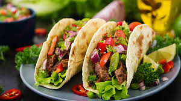

Taco
1 pacote médio de massa para pastel
Chilli
carne moída
400 g de carne de moida
óleo
1 colher (chá) de óleo
cebola
2 cebolas médias picadas
pimenta
pimenta a gosto
extrato de tomate
4 colheres (sopa) de extrato de tomate
mostarda
2 colheres (sopa) de mostarda
feijão preto
2 xícaras (chá) de feijão preto cozido
queijo mussarela
150 g de queijo mussarela
sal
sal a gosto
Guacamole
abacate
1 abacate médio
tomate
2 tomates médios picados
pimenta
pimenta a gosto
cebola
1 cebola média picada
limão
suco de 1 limão médio
azeite
3 colheres (sopa) de azeite de oliva
Acompanhamentos
alface
1/2 maço de alface picado
queijo mussarela
250 g de queijo mussarela picado
tomate
4 tomates sem pele picados
R$ 19,99